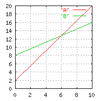
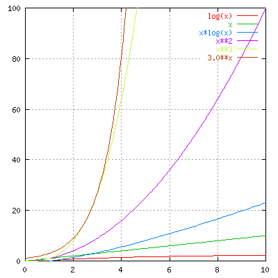

Lecture 19 Jan 2001 Per Kraulis
An algorithm is supposed to do two things:
The second point is of course essential. A correct algorithm is useless if it is too slow. In such cases, we must find another algorithm, or maybe we will have to accept some approximation which allows us to use another algorithm, which runs in reasonable time, but only generates an approximately correct result (whatever that means).
Computer science is the science that deals with the issues of proving that an algorithm is correct, and what its properties are, such as how long time it can be expected to need in the average case, or how much time it will use in the worst case. These analyses are done without reference to any specific computer or programming language; the issue is how many calculation steps (such as additions and multiplications, or exhanges of items in an array) are needed to obtain the result, and how this depends on the size of the problem.
 One of the most important properties of an algorithm is how its execution time increases as the problem is made larger. By a larger problem, we mean e.g. more sequences to align, or longer sequences to align. This is the so-called algorithmic (or computational) complexity of the algorithm.
Let's say we have two alternative algorithms (A and B) for solving the same problem. Algorithm A is the fastest when we have a small number of input data points. But what happens when we have larger input data sets? If the time require by A and B increases in the same way, then A will always be the best. But what if the time to execute A is proportional to the square of the input data size, while B is linear? Then clearly there will be a point at which B becomes the better choice.
There is a notation to describe this, called the big-O notation (svenska: "stort ordo"). If we have a problem size (number of input data points) n, then an algorithm takes O(n) time if the time increases linearly with n. If the algorithm needs time proportional to the square of n, then it is O(n2).
It is important to realize that an algorithm that is quick on small problems may be totally useless on large problems if it has a bad O() behaviour. As a rule of thumb one can use the following characterizations (which a proper computer scientist would not like), where n is the size of the problem, and c is a constant:
| O(c) | utopian |
| O(log n) | excellent |
| O(n) | very good |
| O(n log n) | decent |
| O(n2) | not so good |
| O(n3) | pretty bad |
| O(cn) | disaster |
Please note that the phrase "the size of the problem" may mean different things depending on the context. For example, in sequence searching, it may mean the number of residues in the query sequence or in the database, or the number of sequences in the database. The O() of an algorithm may be different depending on which parameter is relevant for describing the size of the problem. Also keep in mind that there are other resources, such as the amount of memory an algorithm needs, that can limit the usefulness of it.
Alternative algorithms for solving the same problem may differ in how much computation must be done to set up the initial data structure, the initialization stage. There are examples of algorithms where the setup stage is expensive, but the computations that follow it are cheap, compared to some other method. In these cases, the choice of the best algorithm depends on how often the problem arises, and whether the setup can be saved and maintained between runs.
It is in some cases necessary to distinguish between the behaviour of an algorithm in the worst case compared to the average case. Some algorithms may have very different behaviour depending on the exact values of the input data. For example, an algorithm to do multiple alignment may finish quickly if the sequences are very similar, or slow if the sequences are just barely similar. Some algorithms have quite good average O() behaviour, but may be awful in the worst case. Clearly, this can be important to know.